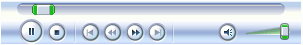
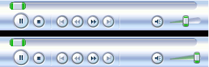
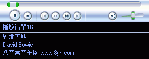
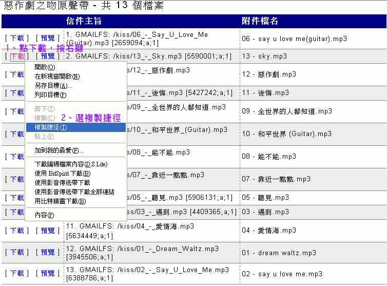
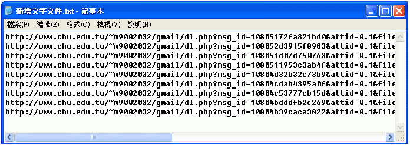
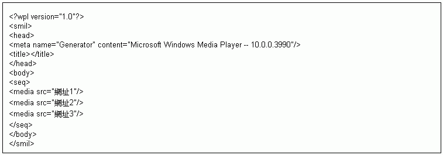

embed 影音播放語法介紹
embed是個很簡便的語法，可以用來播放影音檔，通常它是用來播放Windows Media Player支援的格式，但也可用來播放一些其他格式，只是要注意更多細節，本文最後再略微提一下這些其他格式，主要還是針對播放Media Player支援的格式來討論。(如WMA、WMV、ASF、MPG、AVI)
〈embed src=檔案位址〉
上面這便是embed最簡單、最簡潔的寫法，只要這樣寫便可播放影音檔了，以下再開始討論各注意事項及設定參數。
註：本文為了讓語法呈現出來，採用全形的括弧〈 〉，各位要自行寫語法時記得改回使用半形括弧 < >。
關於結束標籤：
通常語法標籤都是成對的，有開始就有結束，有〈b〉就有〈/b〉，有〈font〉就有〈/font〉。可是embed語法可以不用寫〈/embed〉，完全不會有任何影響，又省事。
關於尺寸：
如上的最簡潔寫法，尺寸可以完全不設定，這是最理想的。播放音樂檔時，會自動呈現一條完整的播放Bar，如右圖所示 (Windows
Media Player版本若不同播放Bar外觀也可能不同)。播放影片時 (WMV、ASF、MPG、AVI)，除了播放Bar，還會以影片的原始尺寸播放出畫面，畫面大小會自動調整。
如果因各種因素而想設定尺寸，例如想刻意拉大縮小影片的畫面，或是想改變播放Bar的大小，只要加進尺寸參數 width=寬度
height=高度 即可，範例如下：
〈embed src=檔案位址 width=寬度 height=高度〉

無論設定任何尺寸，都是包含播放Bar也算在內的，試一下便可瞭解。
關於自動播放：
如上的最簡潔寫法，其預設就是會自動播放。如果不想自動播放，加入參數 autostart=0 即可，範例如下：
〈embed src=檔案位址 autostart=0〉
關於循環播放：
如上的最簡潔寫法，其預設就是不會循環播放的，就只播放一次。如果要循環播放，加入參數 loop=1 即可，範例如下：
〈embed src=檔案位址 loop=1〉
關於Tracker：
嗯，Tracker，中文要怎麼翻譯啊？反正如果加進這句參數 ShowTracker=0，播放Bar就會變成像右圖那樣，應該有看出少了什麼東西吧。語法範例如下：
〈embed src=檔案位址 ShowTracker=0〉
關於Position Controls：
嗯，跟上一篇一樣，不會翻譯啦，反正只要加入這句參數 ShowPositionControls=0，播放Bar就會變成如右圖那樣，看出少了什麼東西了嗎？語法範例如下：
〈embed src=檔案位址 ShowPositionControls=0〉
關於Audio Controls：
就是關於音量控制，只要加入這句參數 ShowAudioControls=0，控制音量的tracker跟靜音鈕都會消失。語法範例如下：
〈embed src=檔案位址 ShowAudioControls=0〉
關於預設的音量大小：
在語法裡面如果沒有寫任何關於音量大小的設定，播放時預設的音量大小如右上圖，大約是50%的音量。
如果希望一開始播放就以100%的最大音量播放，可以加入這句參數 Volume=0，請注意，是等於「零」，不是英文字母的大寫 O。播放時的情況如右下圖，語法範例如下：
〈embed src=檔案位址 Volume=0〉

關於資訊視窗 (part 1)：
只要加進這句參數 ShowStatusBar=1，播放Bar下方便會多出一行資訊視窗，如右圖。語法範例如下：
〈embed src=檔案位址 ShowStatusBar=1〉

這個參數是非常實用的，因為這行資訊視窗會秀出很多有用資訊如下載進度、播放進度、曲名、藝人名稱.......等等。秀出下載進度、播放進度尤其體貼，可以讓瀏覽者大概掌握到底要等多久才會開始播放，不用癡癡望著螢幕像個傻子一樣。我個人建議用embed語法播放影音檔時最好都加上這句參數。
關於資訊視窗 (part 2)：
還有另外一種秀出資訊視窗的參數 ShowDisplay=1，會一口氣秀出四行資訊，每行各秀出一種資訊，如右圖。語法範例如下：
〈embed src=檔案位址 ShowDisplay=1〉

這個參數我認為很無謂！因為這些資訊，用上一個參數 ShowStatusBar=1 便可全部呈現出來，單行資訊，但用交替出現的方式呈現所有資訊。這個 ShowDisplay=1 參數占空間，一行顯示一種資訊，而最有用的下載進度、播放進度等卻不會顯示，大而不當！
關於防右鍵：
各位可以試試在播放Bar上按右鍵看內容，便可看到檔案的真實位址！或是在播放影片時也可以在畫面上按右鍵看內容，也可看到檔案真實位址。加上這句參數 EnableContextMenu=0 便可防止在播放Bar或影片畫面上按右鍵。語法範例如下：
〈embed src=檔案位址 EnableContextMenu=0〉
可是這語法有一點點無謂，因為光是在播放面版上防堵意義不大，還要搭配整個頁面的防堵才能收到效果。所以，自己看著辦吧。
關於隱藏面版：
隱藏面版是件很有趣的事情，只要加上這句參數 hidden=1，整個播放面版就會不見，什麼都看不到，但還是會播放歌曲 (只要你沒有取消自動播放)。語法範例如下：
〈embed src=檔案位址 hidden〉
什麼東西都沒有，卻又會播放歌曲，想到什麼了嗎？沒錯，就是最傳統的背景音樂語法〈bgsound src=檔案位址〉！embed加上 hidden 後，看不到播放面版，也不會影響版面 (完全不佔位置就對了)，表面上的確和bgsound語法一模一樣，兩者可以互相取代。但在功能上，兩者還是有差別的！
用bgsound語法播放歌曲沒有串流功能，即使播WMA也沒有，一定要檔案完全下載完畢才會開始播放。embed加 hidden 就有串流功能。有串流就比較好嗎？不見得！是會比較快開始播放歌曲沒錯，但如果網路繁忙或連線速度慢，播放就會斷斷續續的。bgsound語法要整首下載完才播放，等比較久才聽的到，但開始播後就保證不會斷斷續續的。
所以，現在頁面要播背景音樂有兩種選擇了，就看你要不要串流功能。
播放清單檔：
embed並非只能直接播放影音檔，它也可以播放清單檔如M3U、ASX、WPL等，這樣就可以用一句embed語法播放多首歌曲。語法範例如下：
〈embed src=檔名.m3u〉
當然，想這樣運用自己就得多費心製作清單檔，影音檔跟清單檔上傳時也要注意其相對位置都要擺正確。
並非所有電腦環境都支援播放各式清單檔，如果Windows Media Player版本不夠新，可能就無法播放一些清單檔。還有如果你電腦預設使用其他軟體來播放清單檔 (非Media Player)，也可能無法支援用embed播放清單檔，得將檔案格式連結回Media Player才行。
播放清單檔功能如果搭配上述的隱藏面版功能就很有趣了，什麼都沒看到，卻會自動播放多首背景音樂。不過這無法讓瀏覽者做任何控制，強迫接受多首歌曲，很霸道！^^
程式碼應用：
由於上面ember的應用只限於WMA、WMV、ASF、MPG、AVI、MP3...等副檔名結尾確知的檔案才適用，但其他網站的檔案卻不然，所產生的網址連結是一大串，直接將網址連結套用到src這個參數上面，這樣就可以用一句embed語法播放多首歌曲。以網站音樂檔連結為例，說明如下：
步驟一：首先新增一個純文字文件(別問我怎麼新增)。
步驟二：複製歌曲網址

步驟三：將網址依序貼到剪貼簿上

步驟四：開啟原先播放音樂的網頁，將剛貼好的網址填寫或複製上去取代src後面的網址

步驟五：上傳檔案
之後的上傳步驟，我就不多說了，因為下堂課會教，所以，讓我保留一下唄。
步驟七：然後就可以開始在網頁(留言版)上放歌啦，影片也可以喔!!
Media Player 面 版 參 數 設 定
Media Player 參 數 |
||
參數 |
參數值 |
效果說明 |
autostart |
true |
設定true會立即播放 (true為預設選項) |
false |
||
showcontrols |
true |
設定true會顯示控制面版 |
false |
||
showdisplay |
true |
設定true會顯示資料面版 |
volume |
- 10,000 ~ - 0 |
設定音量大小的數值 最小音量為- 10,000 最大音量是- 0 |
LiveAudio 參 數 |
||
參數 |
參數值 |
效果說明 |
autostart |
true |
設定true會立即播放 (true為預設選項) |
false |
||
loop |
true |
設定true會不斷連續播放 |
false |
||
hidden |
true |
設定true會隱藏播放面版 |
controls |
console |
顯示完整控制面版 |
smallconsole |
顯示小型控制面版 |
|
playbutton |
顯示播放鈕 |
|
stopbutton |
顯示停止鈕 |
|
volumelever |
顯示音量控制鈕 |
|